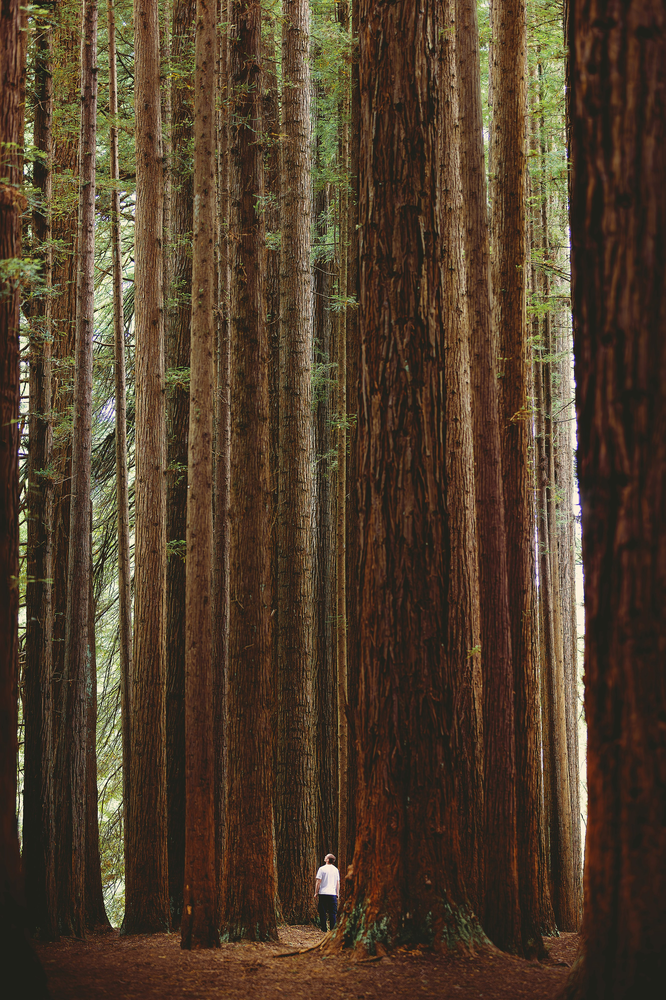

Ancient, Towering and Rare
Good Shepard promotes redwood forest conservation an essential practice for preserving one of the world’s most unique ecosystems. The beautiful coastal redwoods—towering trees that can live over 2,000 years—support a rich network of plants, animals, and fungi. These forests, found mainly in Northern California, are threatened by logging, climate change, and habitat fragmentation. Conservation efforts focus on protecting old-growth stands, restoring logged areas, and maintaining biodiversity. Among the forest’s lesser-known but fascinating residents is the banana slug, a bright yellow creature that plays a vital role in breaking down dead plant matter and spreading seeds and spores. Another notable inhabitant is the western gray squirrel, often seen darting through the canopy, and in some regions, the rare black squirrel—a melanistic variant of the gray squirrel—adds to the diversity. The redwood forest is also home to creatures like the northern spotted owl, Roosevelt elk, Pacific tree frog, and a wide variety of insects and salamanders. These animals depend on the cool, moist climate and complex forest layers for food and shelter. Protecting the redwood forest helps maintain this delicate balance and ensures future generations can experience its beauty and ecological richness. Public support, sustainable practices, and protected areas are key to successful conservation.
